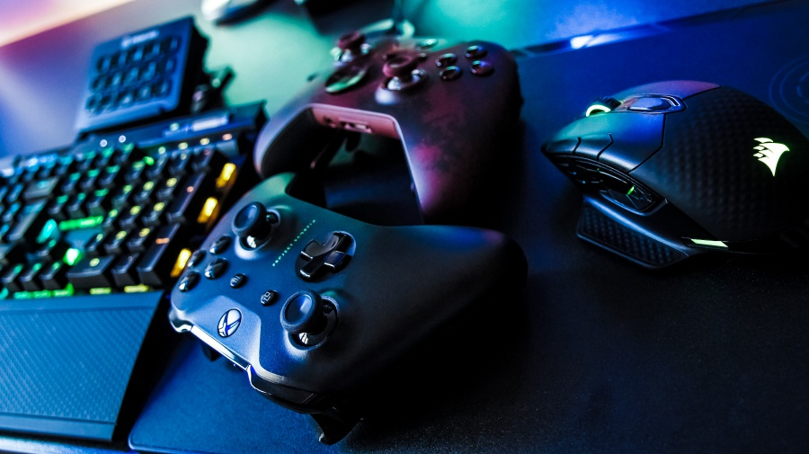

Videójátékok
A videójáték olyan elektronikus játék, amely a felhasználói felülettel való folyamatos kölcsönhatást foglal magában, valósidejű vizuális visszajelzést hoz létre a két- vagy háromdimenziós megjelenítő eszközön (pl. tévé-képernyőn vagy számítógépes monitoron), valamint további érzékszerveinkre is hat. Az 1980-as évek óta a videójátékok a szórakoztatóipar egyre fontosabb részévé váltak, és akár tekinthetők a művészetek egyik formájának is.

A mai modern számítógépes játékban a játékos egyidejűleg használja a billentyűzetet és az egeret az irányításban. A konzoloknál a kézbe vehető, pár gombbal és ujjnyi botkormánnyal ellátott játékvezérlők (kontrollerek) terjedtek el. Az autóverseny-játékokra létezik a valós vezetést idéző kormány, pedál, váltó és kézifék készlet is.
